Learning Objectives
After completing this lesson, you’ll be able to:
- Define a shared parameter.
- Understand when using shared parameters is efficient.
- Share a user parameter by linking it to multiple parameters.
Resources
Introduction
Once a published parameter has been created, it can be shared between readers, writers, or transformers. A shared parameter is used in two or more places. The user is only prompted once, but the value is used for each linked parameter. This is beneficial when running a workspace using multiple transformers with a repeating parameter that is dependent on the user. Shared parameters are also useful in the case of writing to the same location, as demonstrated in the example below.
In the starting workspace, two data flows branch from the BikePath_M shapefile. The LineJoiner is used to join multiple line segments into one. The StatisticsCalculator has been set to calculate the total number of segments per PathName, and the total length of these segments.
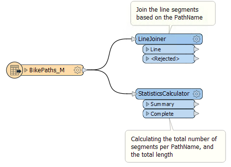
The task for this exercise is to set up a shared published parameter so that two writers (MapInfo and CSV) are set up to write to the same folder as defined by the user. Each run will prompt the user to enter a folder name that is used for both writers. Without setting a shared published parameter, the folder location would have to be specified twice.
1) Open the Workspace in FME Workbench
Open the starting workspace in FME Workbench (2022.0 or later).
2) Create a Published Parameter
In the Navigator window, right-click on User Parameters and select Manage User Parameters.
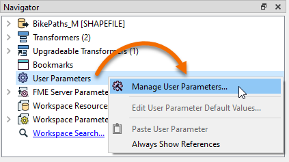
Then, click the Insert icon (green plus sign) and choose File/Url as the parameter type:
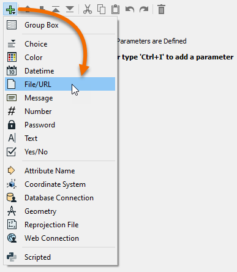
In the Add/Edit User Parameter dialog, enter the following parameters:
Parameter Identifier
|
OutputFolder
|
Prompt
|
Folder Name to Write Data:
|
Published
|
Checked
|
Required
|
Checked
|
Disable Attribute Assignment
|
Unchecked
|
Items to Select
|
Folders
|
Access Mode
|
Read
|
Path Selection
|
Single Path
|
Default Value
|
SharedParameterExample
|
Your dialog should look like this:

Click OK.
3) Add the Writers
Add a CSV writer and leave the Dataset blank. Set the CSV File Definition to Automatic.
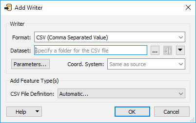
Click OK. Set the CSV File Name to "Bike Path Statistics". Click OK.
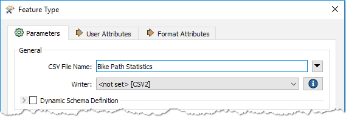Connect the writer feature type to the Summary output port on the StatisticsCalculator.
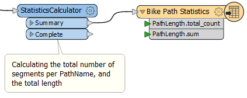
Add a MapInfo MITAB writer and leave the Dataset blank. Set the Table Definition to Automatic.

Click OK. Set the Table Name to "Bike Paths". Click OK.
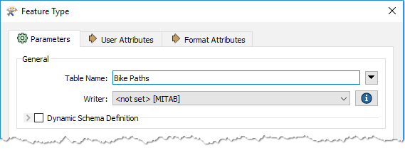Connect the LineJoiner to the Bike Paths MITAB writer feature type.
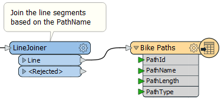
4) Share the Parameter
In the Navigator, expand the CSV writer. Right-click on the Destination and select Link to User Parameter.

Select the OutputFolder parameter.
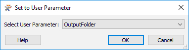
Repeat this step for the MITAB Writer.
Both writers are now sharing the OutputFolder User Parameter.
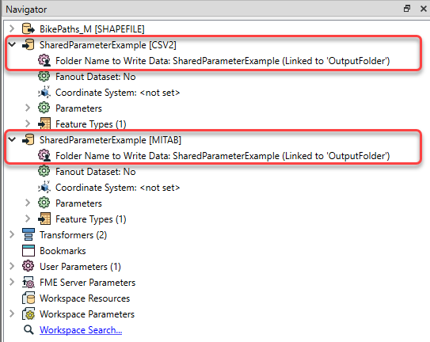
5) Run the Workspace
Set the workspace to Prompt for User Parameters from the Run menu and enter a folder name.

Right-click on one of the writers and select Open Containing Folder.
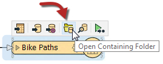
Both the MITAB and CSV files are written to the same folder.